Дива природи і парки України
Дива природи і парки України
Олешківські піски
Олешківські піски — піщана арена, розкинулася в Цюрупинському районі Херсонської області, в 30 км від обласного центру. У діаметрі піски досягають 15 км і є величезним масивом піску в Європі. З супутника пустеля виглядає як маленька жовте пляма на лівому березі Дніпровського лиману. Понад 150 тисяч гектарів - 30 кілометрів від заходу на схід і 150 км з півночі на південь - покриті нескінченними піщаними барханами. Дніпровські піски існували з давніх часів, але їх розширенню перешкоджала місцева природна рослинність. Олешківська пустеля в нинішньому своєму вигляді виникла відносно недавно: через випас великих стад овець в ХІХ столітті, які повністю знищили всю траву до пісків, а ерозія вітру сприяла захопленню все більшої і більшої території. Часто трапляються в Олешківській пустелі і озера — як пересохлі, так і повноводні, а також мінеральні. На глибині 300-400 метрів залягло прісне підземне озеро з чистою, і дивно смачною водою.
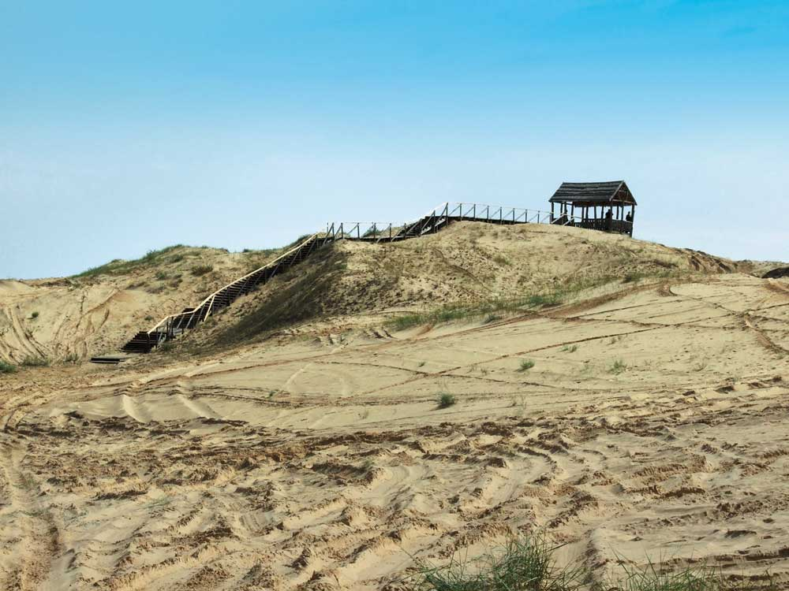
Ландшафтний парк в Буках
Парк закладений на берегах р. Раставиця в 1996 р. на кошти сквирського підприємця В. Суслова в селі Буки Київської області. За його ініціативою було розчищено засмічене русло річки, відновлена гребля, реконструйовано і переобладнано під міні-ГЕС старовинний водяний млин. Мальовничі пороги і скелясті береги Роставиці були перетворені в ландшафтний парк з великою кількістю містків, альтанок і різноманітних скульптур. В ландшафт вдало вписані будівлі садиби родини Суслових: житловий будинок з сімейною каплицею, "вартова башта", мисливський будиночок, столярний цех та ін. В міні-зоопарку можна побачити левів, ведмедів, оленів, поні, павичів.
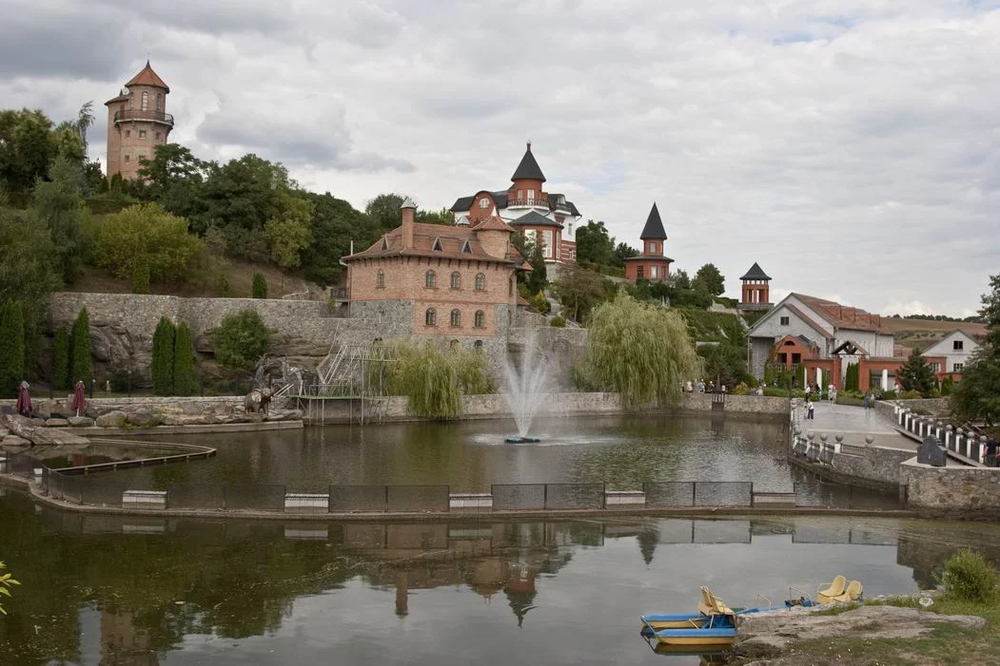
Гранітний каньйон на річці Гірський Тікич
Мальовничий гранітний каньйон на річці Гірський Тікич біля села Буки (кордон Черкаської та Вінницької областей) по праву вважається одним з природних чудес України. Річка Гірський Тікич тече у протерозойських гранітах, вік яких оцінюється в 2 млрд років, і утворює оригінальний, глибокий до 20 м і вузький місцями 20-40 м каньйон. Перед входом в Букській каньйон води Гірського Тікича стрімко скочуються з брили граніту, тим самим створюючи гучний водоспад Вир.
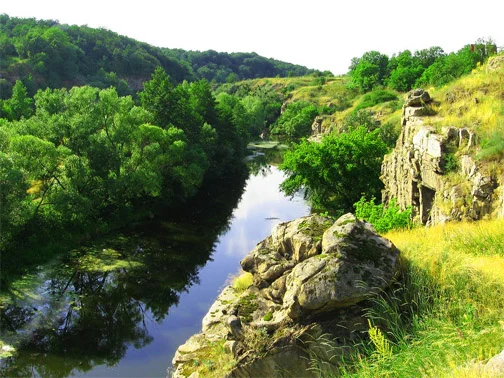
Долина нарцисів
Легендарна Долина нарцисів розкинулась в урочищі Кіреші між р. Тиса і р. Хустець на околиці Хуста. Природа цієї реліктової долини збереглася з Льодовикового періоду. Популяція нарциса вузьколистого тут унікальна тим, що знаходиться не в горах, а на рівнині 180-200 м над рівнем моря. Подібні зарості, але меншої площі, залишилися в небагатьох місцях - Альпах, гірських районах Румунії та деяких Балканських країн. Масове цвітіння Долини нарцисів зазвичай починається в першій половині травня, триває близько двох тижнів точна дата залежить від погоди. Земля покривається білим квітковим килимом незвичайної краси, подивитися на який приїжджають тисячі туристів.
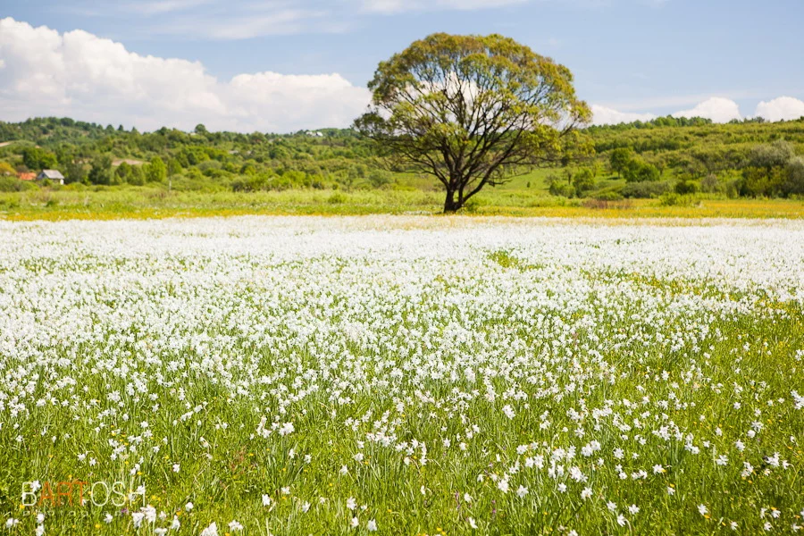
Національний дендрологічний парк Софіївка
Софіївка - одне з найкрасивіших рукотворних чудес України, пам'ятник світового садово-паркового мистецтва кінця XVIII століття. Щорічно парк, що займає близько 180 га, відвідують понад 500 тисяч осіб. Софіївка заснована в 1796 році власником міста Умані, польським магнатом Станіславом Потоцьким та названий на честь його дружини Софії Вітт-Потоцької. По руслу річки Кам'янка споруджено ряд штучних басейнів та ставів: Верхній та Нижній, водоспади, шлюзи, каскади, підземна ріка Ахеронт завдовжки 224 м. Парк прикрашають Левкадська і Тарпейська скелі, гроти, павільйони, альтанки і антична скульптура.
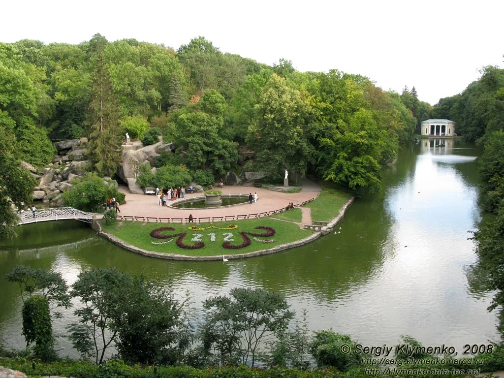
Озеро Синевир
Високогірне льодовикове озеро Синевир розташоване на території Національного природного парку "Синевир". Це найбільше і красиве озеро в Карпатах. Розмір озера змінюється в залежності від кількості опадів. Середня площа - 4-5 га, глибина - 8-10 метрів. Найглибша точка - 22 м. Вода дуже чиста, здається яскраво- блакитною. Водиться форель озерна, райдужна та струмкова, однак риболовля заборонена. На території НПП "Синевир" діє центр реабілітації бурих ведмедів.
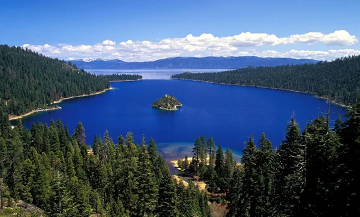
Озеро Світязь і Шацькі озера
В межиріччі Прип'яті і Західного Бугу на Волині, серед лісових масивів, розташувалася група з понад 30 озер. Найбільше з них – Світязь – через кришталево чисту воду і значну глибину часто називають українським Байкалом. В теплу пору року вода біля берегів озера добре прогрівається, що робить популярним цю місцевість серед відпочиваючих. Шацькі озера розташовані серед лісових масивів, в яких побудовано велику кількість баз і таборів відпочинку. Для охорони рідкісних природних комплексів у районі Шацьких озер в 1983 році створений Шацький природний національний парк площею 32 500 га.
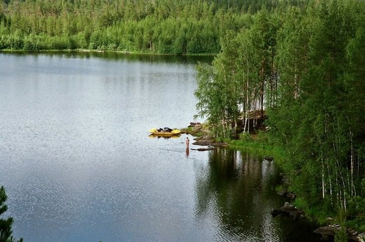
Острів Хортиця в Запоріжжі
Це справді унікальне місце – "острів свободи", колиска українського козацтва. Тут стояла легендарна Січ. Національний заповідник Хортиця - це не просто найбільший острів на Дніпрі, але і унікальний природний та історичний комплекс. Природа острова вражає своєю красою. На порівняно невеликій його площі довжина Хортиці становить 12 км, а ширина — в середньому 2,5 км є свої степи, луки, дубові та хвойні ліси. Завдяки особливим мікрокліматичним умовам, які виникли через велику кількість сонця, прісної води і сухого повітря, флора острова істотно відрізняється від материкової.
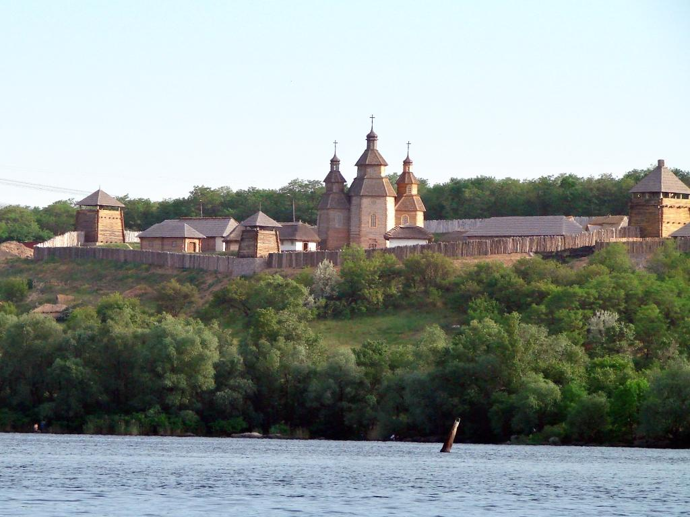
Асканія-Нова
Асканія-Нова – унікальний біосферний заповідник України. Тут можна насолодитися красою степової природи – у парку росте понад 400 видів квітів і трав, 150 видів чагарників і дерев. Фауну Асканії-Нови представляють зебри, африканські та індійські антилопи, південноамериканські верблюди, олені, американські бізони, лами, шотландські поні, коні Пржевальського , сайгаки і т. д. На території заповідника гніздяться білі і чорні лебеді, лебеді-кликуни, журавлі, куріпки, жайворонки, дрохви, фламінго, всього більше 60 різних видів.
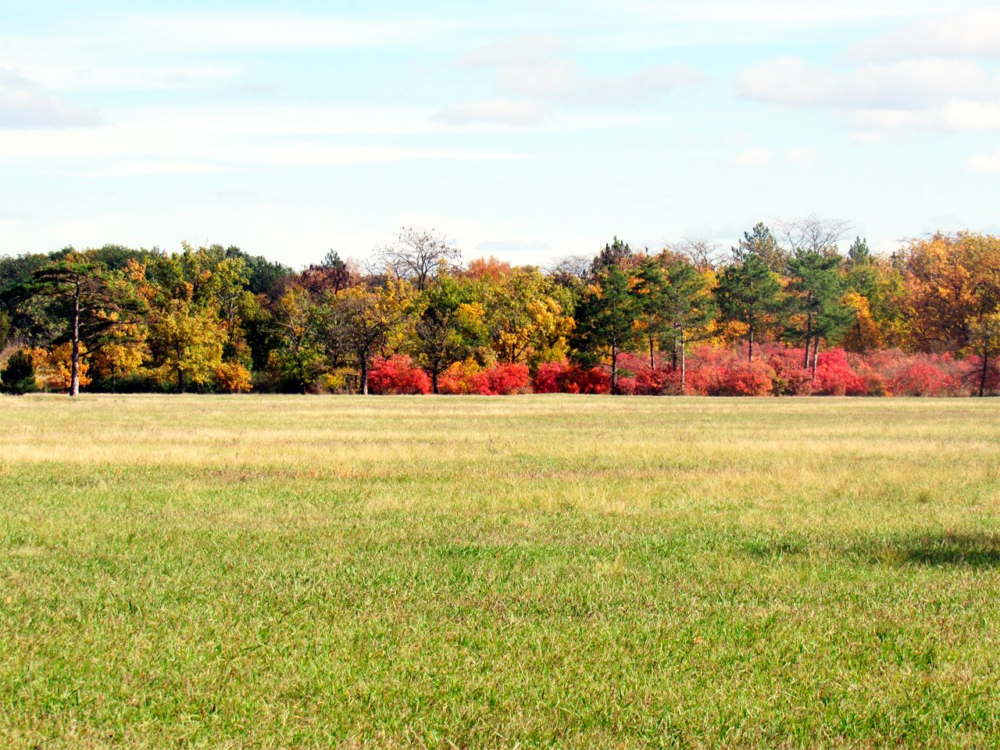
Дністровський каньйон
Утворений цей каньйон в результаті вимивання Дністром гірської породи Подільської височини. Він розташований на межі Івано-Франківської, Тернопільської, Чернівецької та Хмельницької областей. Це найбільший в Україні і один з найбільших в Європі каньйон. Він являє собою долину, чиї стрімкі береги сягають від 100 до 250 метрів над водою. Крім того, на території Дністровського каньйону знаходиться близько 100 пам'яток живої і неживої природи світового значення. Тут збереглися унікальні еталони відслонень гірських порід. Також, на території Дністровського району знаходиться 26 населених пунктів, де була досліджена трипільська культура.
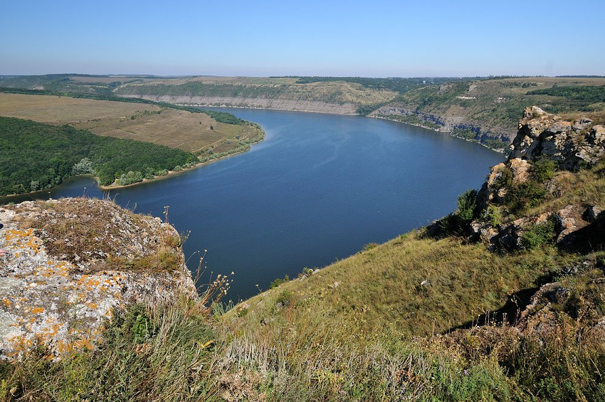
Гранітні скелі Побужжя
Одна з найдавніших ділянок суші Євразії, яка не поринала в морські глибини вже впродовж 60 мільйонів років, знаходиться в межах Північно-Західній частини Миколаївської області. Тут було виявлено 86 представників флори і фауни, яких занесли до Червоної книги України та Європейського Червоного списку. Крім того, величні гранітні скелі подекуди сягають до 50 метрів у висоту і прекрасно підходять для тренувань альпіністів. Прямовисні скелі каньйону давно вважаються улюбленим місцем змагань спортсменів-скелелазів.
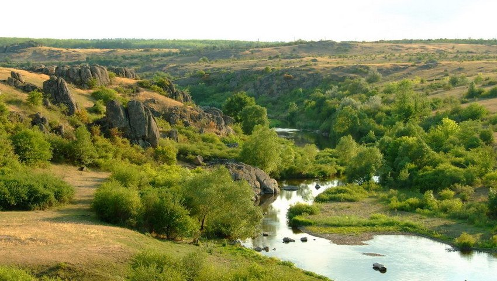
Говерла і Чорногірський хребет
Говерла є найвищою горою і найвищою точкою на території України, її висота становить 2061 метр. Гора розташована на хребті Чорногора в Карпатах, на межі Закарпатської та Івано-Франківської областей, в 17 кілометрах від кордону з Румунією. Вершина Говерли більшу частину часу в снігу, причому дуже часто він лежить там навіть посеред літа. Вершина Говерли являє собою невеликий плаский майданчик, який дає можливість оглянути і помилуватися навколишніми панорамами Карпат в радіусі 360°. З вершини прекрасно видно увесь Чорногорський хребет, що простирається звідси на південний схід, можна побачити всі основні хребти Українських Карпат і гори Марамурешу в Румунії.
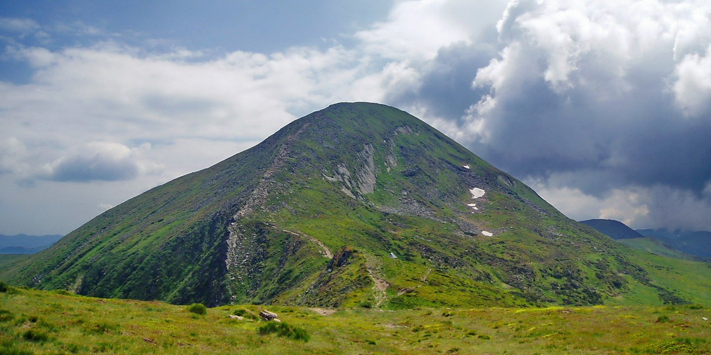
Оптимістична печера
Це найдовша в світі гіпсова печера. Розташована вона поблизу села Королівка, що на Тернопільщині. Утворилася Оптимістична печера внаслідок розчинення підземними водами гіпсів неогенового віку чотирнадцять мільйонів років тому. Найбільшим скарбом печери вважаються вторинні мінеральні утворення, які протягом десятків тисяч років росли тут у підземних порожнинах. Це, насамперед гіпсові кристали різної форми і кольору. Тут, у найбільш низьких ділянках лабіринту печери можна зустріти підземні озера, які нагадують дзеркала з води. Цікаво, що температура повітря в Оптимістичній печері протягом року постійна і коливається від 9,5 – 10,5 градусів і не залежить від температури повітря на поверхні.
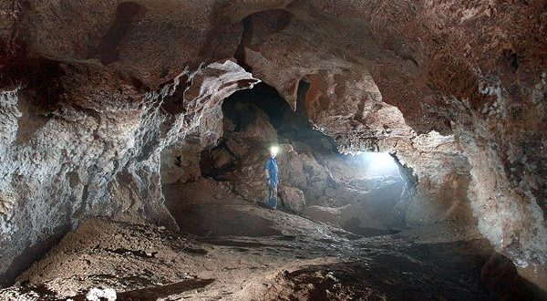
Урицькі скелі
Пам'ятник природи та археології національного значення, який не має аналогів у Європі, розташований поблизу села Урич на Львівщині, на лівому схилі долини ставка Уричанка. Тут, у лісі, височать величні обривисті скелі, висота яких досягає 50 метрів. Урицькі скелі входять в історико-ландшафтний комплекс "Тустань" в складі національного природного парку "Сколівські Бескиди" і включають в себе сім груп скель: Камінь, Гострий Камінь, Мала Скеля, Жолоб, Гулька, Хрест і одна безіменна скеля.
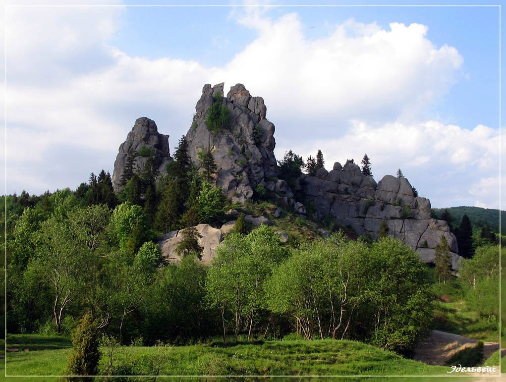
Тунель кохання
Це романтичне місце Волині, яке вважається ботанічним феноменом і перебуває вздовж залізничного шляху між селищами Клевань та Оржів. Утворений був тунель заростями дерев і кущів, які щільно сплелися між собою в арочну форму.
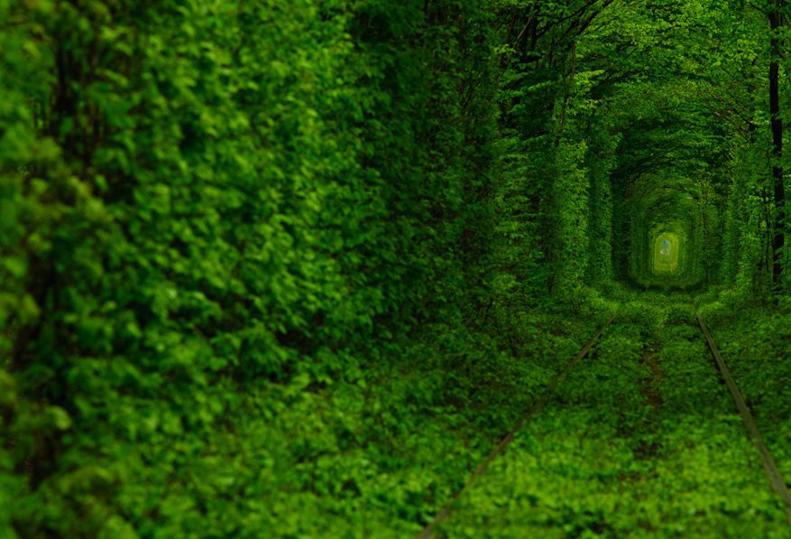
Водоспад Шипіт
Мальовничий водоспад розташований у глибокій ущелині річки Пилипець на північних схилах гірського масиву полонини "Боржава" Карпатського регіону. Це один з найкрасивіших водоспадів України, куди щороку приїжджають десятки тисяч туристів, щоб помилуватися ним. Струмені води водоспаду зриваються з 14-метрової висоти декількома каскадами і розсіюються хмарою крапель. З початку дев'яностих років, щорічно сюди приїжджають хіпі та представники інших субкультур України та з-за кордону на неформальний липневий фестиваль, який завершується святом Івана Купала.
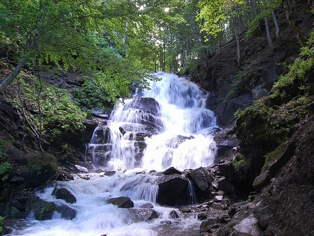